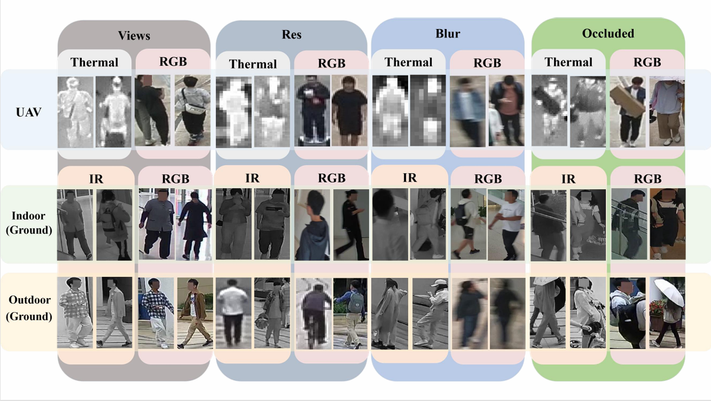
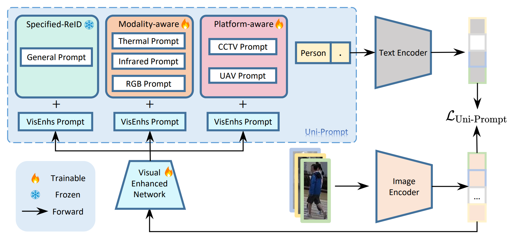
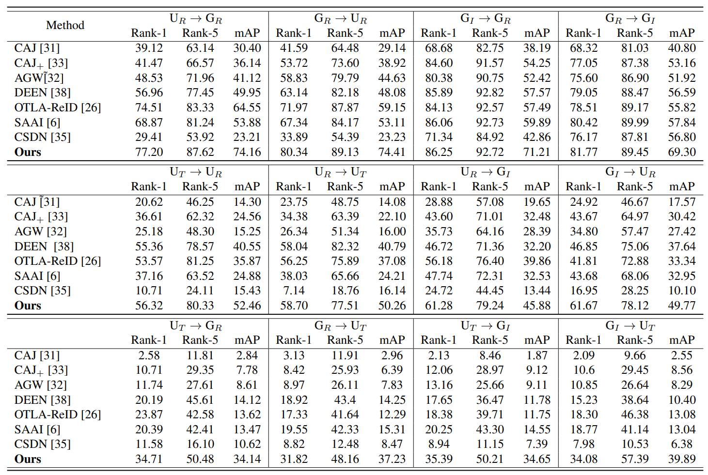

MP-ReID Dataset
We established a new multi-modality and multi-platform dataset MP-ReID, which
consists 1,930 identities and 136,156 images sampled from over 1.2M frames.
The images are collected from ground RGB and infrared cameras and UAV RGB
and thermal cameras.

MP-ReID dataset comprises three distinct modalities and three different scenes, with
notable disparities between images captured in different modalities and scenes. Here
showcase a range of variations to highlight the challenges present in person re-
identification. From left to right, selected samples from different scenes and
modalities illustrate the disparities between various viewpoints, instances of low
resolution, cases of motion blur, and scenarios involving occlusion, respectively. These
examples serve to demonstrate the complex nature of the gaps and obstacles within our
dataset, emphasizing the diversity and real-world applicability of the MP-ReID benchmark.
Leveraging data collection from both ground-based cameras and UAV, our dataset contains
video recordings capturing RGB, infrared, and thermal modalities across indoor, outdoor, and aerial domains.
Noteworthy is the scale of our MP-ReID dataset, featuring 1,930 distinct identities and
136,156 human bounding boxes acquired from 14 cameras. This scale is comparable to that
of multi-view traditional datasets, thus establishing our dataset as a substantial
resource for ReID research, featuring numerous cameras and human annotations across
various platforms and modalities. To ensure robust privacy protection, we applied mosaic
techniques to obscure pedestrians’ facial features in all video recordings and
permanently deleted the original raw footage to prevent any potential data leakage.
To enhance cross-modality and cross-platform generalization in ReID, we introduce Uni-
Prompt ReID, a unified prompt-based learning framework that leverages vision-language
alignment in VLMs like CLIP through multi-part text prompt fine-tuning.

Building on DAPrompt, we incorporate modality and platform information into the text prompt.
Additionally, inspired by CoCoOp, we enhance learnable prompts by designing a weight-tied
meta-network to extract text prompt biases from pedestrian image visual features.
Our framework employs a learnable text prompt structure, as illustrated in the figure,
which integrates multi-modality and multi-platform information into prompt learning.
The text prompt comprises three distinct components: (1) the Specific Re-ID Prompt,
which encodes individual-specific information; (2) the Modality-aware Prompt,
which captures modality-specific details; and (3) the Platform-aware Prompt,
which incorporates platform-specific context. This design enhances the model’s
representational capacity by embedding rich, task-relevant information into the
prompt structure.
Following the existing works, we employed both Cumulated Matching Characteristic (CMC)
at Rank-1 and Rank-5. To account for the retrieval of multiple instances and difficult
samples, we use mean average precision (mAP) as the accuracy metrics.

To validate the various characteristics of our proposed MP-ReID, we designed a total
12 different experimental settings, considering all four image sources: ground RGB,
ground infrared, UAV RGB and UAV thermal. It is important to note that, in order to
address the complexity and variability of city-scale scenarios, it is essential to
fully leverage the interaction between multiple platforms and the complementarity of
different modalities.
To this end, we propose four novel cross-modality and cross-platform ReID settings.
The results from each experiment were recorded and subsequently categorized into
cross-modality,cross-platform, and cross-modality & platform. The mean performance of each method
in each experimental category is shown in the experiment table.The findings in the
table reveal that most of the cross-modality methods perform well in cross-modality
tasks but underperform in the cross modality & platform settings due to the lack of
consideration for platform diversity. Our Uni-Prompt ReID method outperforms other
state-of-the-art methods, with a 7.87% boost in average Rank-1 accuracy and a 15.42%
higher mAP by on our MP-ReID dataset, demonstrating that Uni-Prompt ReID method exhibits
strong robustness and high efficiency.